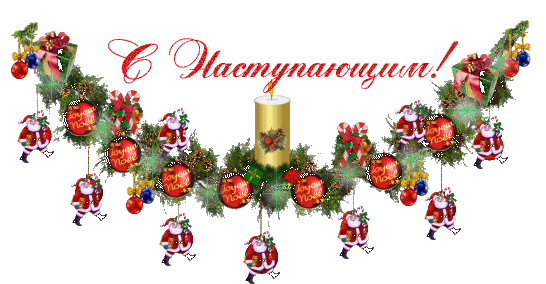

Новий рік - пора казок і магії, найулюбленіший і довгоочікуване свято. У переддень Нового року всіма опановує дивне почуття, що має статися щось чарівне і радісне.
Але є ісклюеніе. Як думаєте, хто це? Звичайно, студенти, які відчувають лише запах СЕСІЇ!
Тому, сьогодні я пропоную вам зануритися в атмосферузимової сесії 2к19:)